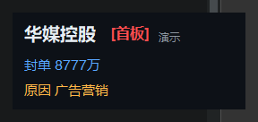

这是什么
看涨停板的痛点不是「看不到」，而是「看不过来」：池子几十上百只，每隔几秒就有新的封板、炸板、回封。真正值得抬头的只有一件事——某只票在这一刻第一次上板。其余的都是噪音。
这个工具就只做这一件事：交易日 09:26 先采一次竞价涨停当基准，09:30–14:57 每 5 秒扫一遍涨停池，发现新面孔就弹一张卡，告诉你名字、板数与封单额，右下角 3 秒后自动关闭。14:57 自己收工，不留后台进程。
免安装：Release 里下 ZTPopup.exe 双击即用，不需要装 Python，不会弹出黑框，也不写注册表、不加开机自启。
界面

卡片只放三行有用信息：股票名 + 板数标记（首板 / 二板…）、封单金额、上涨原因或所属题材。深色底、红字标板数，扫一眼就知道要不要回头看盘。
另有一个常驻的状态小窗，比卡片更安静，但随时能确认它还在干活：当前处于哪个阶段（竞价 / 盘中 / 已收盘）、数据是哪一天的、涨停池现在多少只、今天已经提示过几次、上次扫描时间。任务栏也有图标，程序在不在跑一眼可见。
非交易日打开会直接写明「今日休市，不会有盘中数据」，不会让人干等一个永远不会来的弹窗。
只喊一次怎么做到
「不重复、不刷屏」是这工具唯一值得说的设计，规则写死成四条：
| 场景 | 行为 |
|---|---|
| 竞价阶段（09:30 前）已涨停 | 只记入基准名单，不提示；盘中即使炸板回封也不提示 |
| 同一只票炸板 → 回封 → 再炸 | 全程只弹最初那一次，后续一律静默 |
| 盘中中途才打开程序 | 先把当前已涨停的全部静默记入，只提示之后新上板的 |
| 14:57 以后 | 自动结束进程，不再扫描 |
换句话说，它把「已经发生过的」和「刚发生的」严格分开——不会因为你开得晚就补发一串轰炸，也不会因为一次回封把早就看过的票再喊一遍。
单实例保护：重复双击只会提示「已在运行」，不会开出第二个进程抢同一个数据源。
数据与容错
数据来自东方财富的涨停板池接口（getTopicZTPool），免费、无需 token、盘中准实时。请求失败按 2 / 5 / 8 秒退避重试，三次都失败就降级用上次缓存渲染，不会崩窗、也不会弹一堆错误框烦人。
源码运行需要 Python 3.9+ 且解释器带 tkinter；也可以加 --demo 用最近交易日的真实数据演示一次弹窗，不用等开盘。
边界与免责
它是个提醒器，不是决策工具。看得到「谁刚上板」不等于看得到「该不该跟」——封单额会撤，题材会熄火，这些都是卡片给不了的信息。
本工具仅作行情信息展示与提醒，数据来自公开接口，可能存在延迟或缺失，不构成任何投资建议。市场有风险，投资需谨慎。
- 只读公开行情接口，不接入任何交易通道，不下单、不修改账户。
- 不采集、不上传本机任何信息；退出即结束，不留驻留进程。
- 接口若变更或限流，提醒会失效——这类外部依赖不在可控范围内。